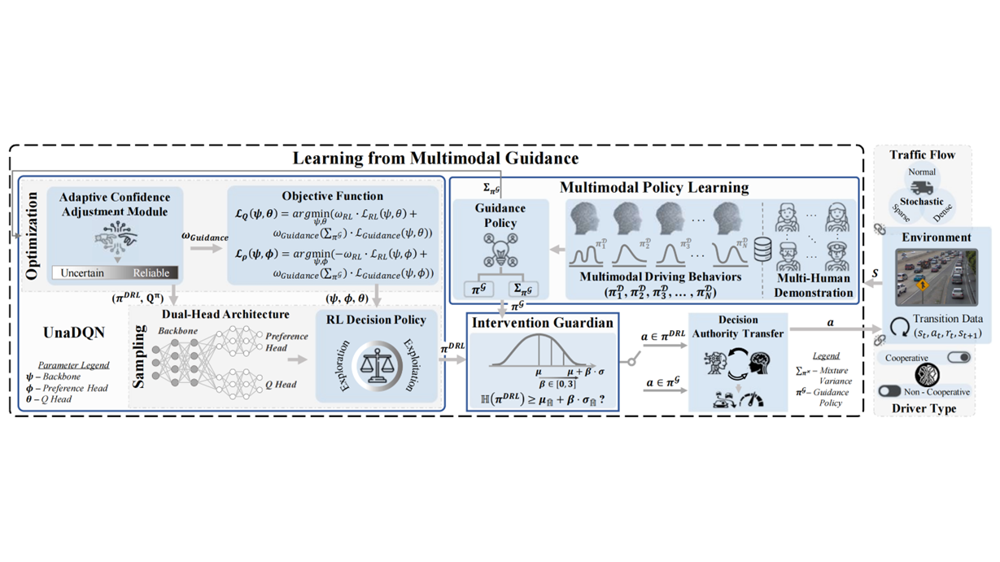
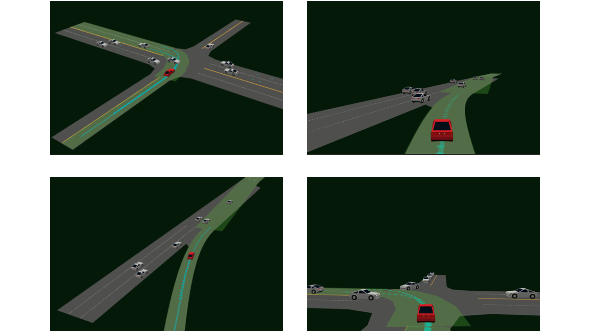

Preview

Universal Framework of Learning from Multimodal Guidance.

Multi-human Demonstration.

Autonomous Driving Scenario.

Benchmark Comparison.

While existing Learning from intervention (LfI) methods within the human-in-the-loop reinforcement learning (HiL-RL) paradigm mainly operate on the assumption that human policies are homogeneous and deterministic with low variance, natural human driving behaviors are multimodal with intrinsic uncertainties, and hence, accommodating diverse human capabilities is significant for its practical applications. This work proposes an enhanced LfI approach for learning the optimal RL policy by leveraging multimodal human behaviors in the setting of N-driver concurrent interventions. Specifically, We first learn the N number of human digital drivers from the multi-human demonstration dataset, wherein each driver possesses its own policy distribution. Then, the post-trained drivers will be kept in the training loop of the RL algorithms and provide multimodal driving guidance whenever the intervention is required. Additionally, to better utilize the provided guidance, we augment the RL regarding the fundamental architecture and optimization objectives to facilitate the proposed uncertainty-aware reinforcement learning (UnaRL) algorithm. The proposed approach, which won 2$^{nd}$ place in the Alibaba Future Car Innovation Challenge 2022, is solidly compared in two challenging autonomous driving scenarios against state-of-the-art (SOTA) LfI baselines, and results of both simulation and real-world experiment confirm the superiority of our method in terms of learning robustness and driving performance. Videos and source code are provided.